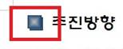
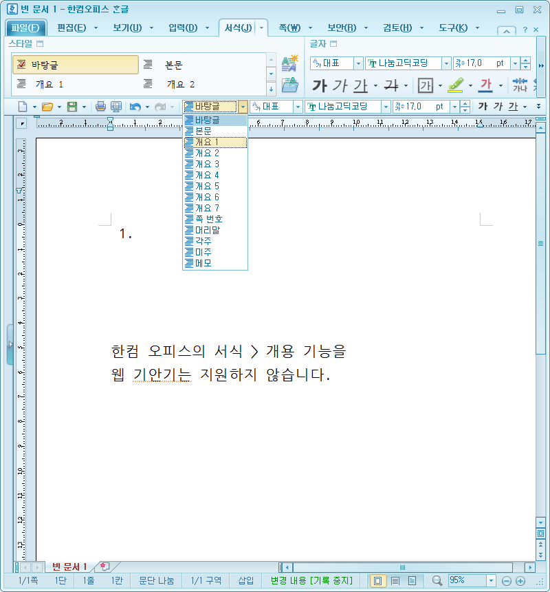

- 웹 기안기는 ActiveX의 제약에서 벗어나 Web Browser만으로도 문서 편집을 편리하게 할 수 있는 기능을 제공합니다. ActiveX를 기반으로 하지 않기 때문에 다양한 운영체제(Windows, Linux, MacOS)에서 일관된 사용자 경험을 제공합니다.
- 웹 기안기는 웹 문서(HTML)를 일반 문서 편집용 워드프로세서와 유사하게 사용할 수 있는 기능을 제공합니다.
- 웹 기안기와 문서변환서버를 함께 사용할 경우(ex. 온나라 시스템) 웹 문서(HTML)를 개방형 문서에 대한 국제 표준인 ODT로 변환해서 저장할 수 있습니다.
- 개방형 문서 표준은 국제표준기구(ISO)에서 만들어졌으며, 우리나라의 경우에도 이를 한국산업표준(KS)에서 문서 표준으로 도입했습니다.
- 웹 기안기와 문서변환서버를 함께 사용할 경우 문서 편집은 웹 문서(HTML) 형식을 사용하고, 저장 시에는 개방형 문서 표준(Open Document Format)으로 변환한 뒤 저장하기 때문에 이러한 문서 형식의 변환 과정에서 일부 정보가 변경될 가능성이 있습니다.
- 본 가이드에서는 ActiveX 기반의 기존의 설치형 기안기에 익숙한 사용자들의 불편함을 최소화하기 위해 사용 과정에서 주의해야 할 점들을 정리했습니다.
- 기존 시스템과 달라지는 점으로 인해 사용자 여러분에게 불편을 드리는 점 사과 드리며, 웹 기안기 및 문서 변환 서버의 지속적인 업데이트를 통해 불편 사항을 해소해 나가겠습니다.
PART I. 사용시 권유사항
1. 웹 기안기의 글꼴 사용 시 유의 사항
2. 표는 간략하게 사용해 주세요.
3. 페이지가 많아질 경우 편집 성능이 느려질 수 있습니다.
|
NOTE
|
1. 웹 기안기의 글꼴 사용 시 유의 사항.
웹 기안기를 이용한 문서 작성 시 글꼴은 고정폭 글꼴을 사용해 주세요.
■ 고정폭 폰트란
흔히 ‘글꼴’ 흔히 글꼴이라고 부르는 폰트에는 매우 많은 종류가 있습니다.(굴림, 궁서, 바탕, 돋움, 고딕, 굴림체, 궁서체, 바탕체, 돋움체, 고딕체 등)
이러한 폰트를 크게 두 종류로 나누자면 ‘가변폭 폰트’와 ‘고정폭 폰트’로 나눌 수 있습니다.
가변폭 폰트란 각각의 글자가 차지하는 가로 넓이(폭)가 글자에 따라 각각 다른 것을 뜻합니다.
예를 들면 알파벳 대문자 ‘L’과 소문자 ‘l’를 비교했을 때 소문자 ‘l’이 차지하는 넓이가 더 작게 표현될 경우 이를 가변폭 폰트라고 말합니다.
웹 기안기는 기본적으로 고정폭 폰트 사용을 지향합니다.
[ Google Chrome에서 돋움 글꼴과 돋움체 글꼴의 글꼴 크기별 출력 차이]
[ Microsoft Internet Explorer에서 돋움 글꼴과 돋움체 글꼴의 글꼴 크기별 출력 차이 ]
* IE에서는 가변폭 폰트(돋움)에 대해 글꼴 크기가 작아도 더 넓게 표시되는 경우가 발생합니다
웹 기안기나 ODT문서를 다른 프로그램에서 편집 시 가변폭 폰트를 사용할 경우, 최종 결과물인 PDF 파일에서 문서의 정렬이 달라지기 때문에 전체 페이지 수가 늘어나거나 줄어드는 문제가 발생할 수도 있습니다.
또한 가변폭 폰트를 사용해서 문서를 작성할 경우 웹 환경(Web Browser 종류별, 버젼별)에 따라 출력 결과가 다르게 표현됩니다. 이럴 경우 문서 저장 시 ODT파일이나 PDF파일의 문서 정렬이 어긋나는 결과가 나타날 수도 있으므로 사용자 여러분들께서는 문서 작성 시 고정폭 폰트를 사용해 주시기 바랍니다.
고정폭 글꼴의 종류 : 돋움체, 바탕체, 굴림체, 궁서체, 나눔고딕코딩 등
■ 웹 기안기가 지원하는 글꼴에는 제약이 있습니다.
위에 설명한 바와 같이 “가변폭 글꼴”을 사용할 경우 ODT, PDF등으로 문서 변환 과정을 거칠 경우 원본 웹 기안 작성 결과와 다른 출력 결과가 나타날 수 있습니다.
때문에 웹 기안기는 설치형 문서 편집기와 다르게 지원하는 글꼴에 의도한 제약을 두고 있습니다.
웹 기안기가 지원하는 글꼴의 종류에 제약이 있기 때문에 다른 글꼴로 작성된 문서를 웹 기안기로 불러올 경우 기본 글꼴(ex. 온나라 시스템의 경우 ‘돋움체’)로 변경해서 출력됩니다.
(ex. ‘맑은 고딕’ 글꼴로 작성한 문서를 웹 기안기에서 오픈 시에는 ‘돋움체’로 변경해서 출력됨)
웹 기안기는 점차 지원하는 글꼴을 늘려나갈 계획이므로 사용에 참고 부탁 드립니다.
2. 표는 간략하게 사용해 주세요.
웹 기안기를 이용해서 표를 사용할 경우에는 가능한 간략한 형태의 표를 사용해 주세요.
■ 문서 형식과 표 관련 기능 및 표현 능력 차이
HWP 문서 형식은 매우 복잡한 구조의 표 사용이 가능하고, 미세한 편집 기능도 제공되고 있습니다.
반면 개방형 문서 형식인 ODT의 경우 한컴오피스의 HWP 형식 만큼 표에 대한 많은 기능과 미세한 편집은 불가능합니다. 이는 전자 문서 형식의 표준을 수립하기 위해 가능한 일반적인 범위 내의 기능들을 고려해서 만들어졌기 때문입니다.
문서 형식별 표 관련 기능의 제공 범위 및 표현 능력
|
웹 기안기의 경우 다양한 기술 개발을 통해 일반적인 웹문서에서 사용 가능한 표 편집 기능보다 더 많은 기능을 제공하고 있습니다.
하지만 HWP 문서 형식에 익숙한 사용자에게는 여러 가지 제약 사항이 있기 때문에 불편함을 느끼실 수 있습니다.
그럼에도 불구하고 문서 형식의 차이로 인한 문제는 해결이 불가능한 부분입니다.
사용자 여러분의 양해를 부탁 드리며, 웹 기안기에서 표 사용 시 주의해야 할 점들을 PART II.에 정리했습니다.
3. 페이지가 많아질 경우 편집 성능이 느려질 수 있습니다.
웹 기안기를 이용한 문서 작성 시 페이지가 많아질 경우 편집 성능이 느려져서 사용이 불편하실 수 있습니다.
■ 설치형 문서 편집기와 웹 기안기의 차이
설치형 문서 편집기(ex. MS Office, 한컴오피스, 폴라리스 오피스 등)의 경우 각각의 운영체제(ex. Windows, MacOS, Linux)에 최적화된 방식으로 각각 개발되고, 사용자는 이 소프트웨어를 설치해서 사용하는 방식입니다.
반면 웹 기안기(Web용 문서 편집기)는 운영체제에 관계없이 Web Browser(ex. Internet Explorer, Google Chrome, Firefox, Safari, Opera등)만 있으면 사용이 가능하도록 개발되었기 때문에, 사용자는 별도의 프로그램 설치 없이도 사용이 가능합니다.
웹 기안기가 위와 같은 장점을 가지고 있지만, 아직은 설치형 문서 편집기와 동일한 수준의 기능이나 성능을 제공하지 못하는 점은 단점으로 볼 수 있습니다..
이는 본 웹 기안기만의 문제가 아니라 타사 제품들(MS Web Office, 넷피스, 스마트 오피스 등)의 경우에도 동일하게 단점으로 지적되는 부분입니다.
또한 웹 기안기의 편집 성능은 Web Browser의 종류 및 버전 등에 따라 많은 차이를 보이는데 이는 Web Browser의 자체 성능에 영향을 받을 수밖에 없기 때문입니다.
대용량 문서에 대해서도 설치형 문서 편집기 수준의 기능과 성능을 제공하기 위해 지속적인 고도화 작업을 진행 중에 있습니다.
PART II. 표 사용 시 유의사항
1. 단순한 구조의 표를 이용해 주세요.
2. 페이지 경계에 위치한 표는 내용을 간략하게 적어 주세요.
3. 표의 배치에 유의해 주세요.
4. 표의 속성에 유의해 주세요.
1. 단순한 구조의 표를 이용해 주세요.
ODT문서 형식과 웹 기안기에서 문제없이 표를 사용하기 위해서는 표의 구조가 간단해야 합니다.
■ 복잡한 구조의 표를 사용할 경우 문서 정렬이 어긋날 수 있습니다.
- 표 내부의 각 셀들의 크기 또는 텍스트의 정렬이 제대로 표현되지 않아 문서의 정렬이 흐트러질 수 있습니다.
- 표의 내부 구조가 복잡해질수록 웹 기안기나 ODT(또는 PDF)문서 형식으로 저장 시 정보가 유실될 가능성이 높아집니다.
2. 페이지 경계에 위치한 표는 내용을 간략하게 적어 주세요.
표의 위치가 페이지와 페이지간 경계에 위치하고 표 안의 내용이 많을 경우, 웹 기안기는 표 안의 내용을 기준으로 페이지가 구분되는 것이 아니라 ‘행’ 단위로 페이지를 구분합니다.
■ 설치형 문서 편집기에서 페이지 경계에 위치한 표의 내용이 많을 경우
- 설치형 한컴오피스에서 내용을 기준으로 표가 구분되는 화면
- 설치형 MS Office에서 마찬가지로 내용을 기준으로 표가 구분되는 화면
■ 웹 기안기 및 웹용 문서 편집기에서 페이지 경계에 위치한 표의 내용이 많을 경우
- 한컴 웹오피스에서의 페이지 구분 화면
- 웹 기안기에서의 페이지 구분 화면
- 내용이 많은 상태에서 페이지가 분리되면 아래와 같이 여백이 발생하게 됩니다.
3. 표의 배치에 유의해 주세요.
웹 기안기는 기존 설치형 문서 편집기와 비교했을 때, 문서 내 표의 배치 및 속성 편집의 기준이 다릅니다.
■ 본문 내 표와 바닥글이 겹치는 경우
- ODT문서 형식과 HWP 문서 형식은 본문 영역과 바닥글이 겹칠 때 처리하는 기준이 정반대입니다.
- HWP 문서의 경우에는 본문과 바닥글이 겹칠 때 바닥글을 상단에 출력하지만, ODT문서 형식은 그와 반대로 본문 영역을 바닥글보다 상단에 표현합니다.
- 이는 문서 형식의 차이 때문이며 HWP처럼 바닥글을 본문보다 상단에 출력할 수 없습니다.
■ 큰 표의 표현을 위해 일부 페이지만 문서 방향을 가로로 설정할 수 없습니다.
- ODT문서 형식은 문서의 일부 페이지만 가로로 설정하는 것이 불가능합니다.
- 이 때문에 크기가 큰 표를 표현하기 위해 특정 페이지만 가로로 설정할 경우, 위 그림처럼 문서 표가 잘려서 출력되는 문제가 발생합니다.
■ 한 줄엔 단 한 개의 표만 삽입할 수 있습니다.
- HWP의 경우 한 문단(줄)에 두 개 이상의 표를 삽입할 수 있지만, 웹 기안기와 ODT문서 형식은 단 한 개의 표만 삽입할 수 있습니다.
- 이는 ODT문서 형식의 제한 사항이므로 기능 제공이 불가능합니다.
4. 표의 속성에 유의해 주세요.
ODT문서 형식과 웹 기안기에서 문제없이 표를 사용하기 위해서는 표의 구조가 간단해야 합니다.
■ 표를 글자처럼 취급
HWP의 경우 표의 ‘글자처럼 취급 속성’을 키거나 끌 수 있는 옵션을 제공하지만, 웹 기안기 및 ODT문서는 이러한 옵션 없이 표는 언제나 ‘글자처럼 취급’되는 속성만 가집니다.
HWP의 경우 표의 ‘글자처럼 취급 속성’을 키거나 끌 수 있는 옵션을 제공하지만, 웹 기안기 및 ODT문서는 이러한 옵션 없이 표는 언제나 ‘글자처럼 취급’되는 속성만 가집니다.
이는 ODT문서 형식이 위 속성에 대한 옵션을 제공하지 않기 때문입니다.
웹 기안기를 이용한 문서 작성 시 표를 추가할 경우 위와 같은 특성에 유의해서 사용해 주시기 바랍니다.
■ 표 테두리 종류
HWP와 ODT 및 웹 기안기는 표현할 수 있는 표의 테두리 종류가 다릅니다.
|
테두리 종류 |
HWP |
웹 기안기 |
|
실선 |
O |
O |
|
|
O |
O |
|
점선 |
O |
O |
|
일점 쇄선 |
O |
표현 불가능 |
|
이점 쇄선 |
O |
표현 불가능 |
|
긴 파선 |
O |
표현 불가능 |
|
원형 점선 |
O |
X |
|
이중 실선 |
O |
O |
|
얇고 굵은 이중선 |
O |
O |
|
굵고 얇은 이중선 |
O |
O |
|
얇고 굵고 얇은 다중선 |
O |
표현 불가능 |

웹 기안기 및 ODT문서 형식에서 표현 가능한 테두리의 종류는 위와 같습니다. 문서 작성 시 참고해 주세요.
■ 표 테두리를 대각선으로 설정할 수 없습니다.
- HWP에서는 표의 테두리에 대각선 삽입이 가능하지만 웹 기안기 및 ODT문서 형식에서는 대각선 테두리 사용이 불가능합니다.
■ 표의 셀 배경이 출력되지 않는 경우
HWP로 작성된 문서의 표 내부의 셀 배경이 출력되지 않을 수 있습니다.
■ 표 안의 텍스트 균등 분할(배분 정렬, 나눔 정렬) 불가능
HWP에서는 표 안의 텍스트에 대해 ‘균등 분할(배분 정렬, 나눔 정렬)’ 기능을 제공하지만 웹 기안기 및 ODT문서 형식에서는 이와 같은 정렬은 불가능합니다
PART III. 구글 크롬 브라우져 사용시 유의사항
1. Google Chrome 브라우져 사용 시 유의 사항
|
Chrome Browser의 단락에 대한 출력 방식
|
1. Google Chrome 브라우져 사용 시 유의 사항
Chrome브라우져의 단락(줄) 표시 방법으로 인해 Chrome환경에서 웹 기안기 사용 시 실제 작성한 것보다 ODT문서나 PDF문서에서 페이지가 늘어날 수 있습니다.
■ Chrome의 단락(줄) 표시 기준
아래 그림에서 표시된 영역이 하나의 단락(줄)이며, 원본 문서에 정의된 단락의 높이값은 25.17 입니다.
- Chrome은 이 값에서 소수점 이하를 버려서 25.17이 아닌 “25”로 표현합니다.
( 아래 그림 참고 )
- 이러한 표현 기준을 모든 단락(줄)에 적용하기 때문에 결과적으로 웹문서를 ODT문서 형식이나 PDF로 변환 시 다음과 같은 차이가 발생합니다.
(PDF문서에서 한 줄이 다음 페이지에 표시됨)
이 문제는 웹 기안기의 문제가 아니라 특정 Browser의 특성 때문에 발생하는 것으로 수정이 불가능합니다.
|
Google Chrome 사용 시 문제 확인 방법
|
PART IV. 인터넷 익스플로러 사용 시 유의사항
1. Internet Explorer 브라우져 사용 시 유의 사항
|
Internet Explorer에서 글상자 삽입 후 본문과의 배치 지정 시
|
1 Internet Explorer 브라우져 사용 시 유의 사항
Microsoft사의 Internet Explorer브라우져의 11 버전을 이용해서 웹 기안기를 사용할 경우 다음과 같은 제약 사항이 있습니다.
■ 본문과의 배치 속성을 지정한 글상자에서 한글 입력이 안 되는 문제
아래 그림과 같이 웹 기안기는 글상자 삽입 시 ‘본문과의 배치 속성’을 지정할 수 있습니다.
- '본문과의 배치' 속성이 '기본'인 경우에는 아래 그림처럼 글상자가 하나의 단락을 차지하며, 정상적으로 입력이 가능합니다.

- 하지만, ‘본문과의 배치’ 속성을 ‘왼쪽 또는 오른쪽’으로 지정하면 글상자에 텍스트 입력 시 자음과 모음이 분리되거나, 혹은 제대로 입력되지 않는 현상이 발생합니다.
(IE에서 글상자 본문과의 배치 속성을 왼쪽 또는 오른쪽으로 지정 후 한글 입력 시)
- 이는 Internet Explorer 11 중 특정 버전들에서 발생하는 문제로 웹 기안기에서는 수정이 불가능합니다.
표 전체의 정렬을 오른쪽으로 지정한 경우에도 유사한 문제가 발견된 적이 있습니다.
(IE에서 표의 정렬을 우측으로 지정 후 한글 입력 시)
|
위와 같은 문제 발생 시 대처 방법
|
- Google Chrome 브라우져에서는 유사한 문제가 발생하지 않습니다.
PART IV. 복사/붙여넣기 시 유의사항
1. 복사/붙여넣기
2. 프로그램 간 복사/붙여넣기 시 문제의 예
|
프로그램 간 복사/붙여넣기 동작 방식 및 한계점
|
1. 복사/붙여넣기
다른 문서 편집 프로그램에서 복사 후 웹 기안기에 붙여넣기 동작 시 제약 사항들을 설명합니다.
■ 복사/붙여넣기
각종 문서 편집 프로그램에서 작성한 내용을 웹 기안기로 복사/붙여넣기 시 기존에 작성한 문서의서식이 유지되지 않을 수 있습니다.
예를 들어 한컴오피스에서 서식이 적용된 문서의 일부 영역을 ‘복사’한 뒤 웹 기안기에 ‘붙여넣기’를 실행하면 한컴오피스에서의 서식이 그대로 유지되지 않습니다. 이는 웹 기안기 뿐만 아니라 MS Office Word 등으로 붙여넣기 동작 시에도 동일하게 발생합니다.
이는 복사/붙여넣기 동작의 특성에 기인합니다.
문서 편집 프로그램에서 영역을 선택한 뒤 ‘복사’를 실행하면 이 프로그램에서 생성한 데이터가 운영체제의 Clipboard라는 곳에 전달되고, 다시 웹 기안기나 다른 프로그램에 ‘붙여넣기’를 실행하면 Clipboard에 있던 데이터가 입력됩니다.
이 과정에서 상호 호환되지 않는 데이터가 사용되고, 문서의 형식이 HWP, ODT, HTML로 서로 다르기 때문에 문서의 서식이 유지되지 않는 문제가 발생합니다.
한컴오피스에서 위와 같이 작성한 후
영역을 선택한 뒤 복사(Ctrl+C)를 실행하면 한컴오피스가 만들어낸 데이터가 시스템의 클립보드에 삽입됩니다.
이후 MS Office에서 붙여넣기를 실행하면 두 프로그램끼리 데이터가 호환되지 않아 위와 같은 결과가 나타납니다.
웹 기안기에 붙여넣기를 실행해도 원본과 동일한 결과를 얻을 수 없습니다.
이러한 문제는 웹 기안기의 문제가 아니라 각자 다른 기준으로 생성한 데이터가 호환되지 않기 때문입니다.
다른 프로그램에서 문서를 작성한 뒤 웹 기안기에 붙여넣기를 실행할 때에는 위와 같은 문제가 발생할 수 있다는 점에 주의해 주시기 바랍니다.
2. 프로그램 간 복사/붙여넣기 시 문제의 예
■ 한컴 오피스에서 복사 후 웹 기안기로 붙여넣기 시
그림을 포함한 내용을 웹기안기에 붙여넣기한 경우에 Browser의 종류에 따라 그 결과가 다르게 나타납니다.
[ Internet Explorer ]
[ Chrome ]
이러한 문제는 Polaris 웹 기안기가 아닌 다른 프로그램에서도 동일하게 나타나며, 브라우저의 특성으로 인해 발생하는 현상으로 웹 기안기에서는 처리가 불가능한 사항입니다.
|
Browser별로 붙여넣기 결과가 다른 원인
|
PART V. 문서 형식 변경으로 인한 차이점
1. 문서의 일부가 유실되는 경우
2. 출력 결과가 달라지는 경우
|
NOTE
|
1. 문서의 일부가 유실되는 경우
사용자가 HWP문서를 직접 ODT 또는 웹문서(HTML)로 변환해서 사용하는 경우 문서의 내용이 유실되는 경우들을 설명합니다.
■ HWP 문서에 있던 표가 출력되지 않는 경우
HWP로 작성된 문서에 ‘캡션(주석) 내부에 표’가 추가되어 있는 경우 표 전체가 출력되지 않을 수 있습니다.
HWP 문서는 캡션(주석)에 표를 추가할 수 있지만 ODT문서는 주석에 표를 추가할 수 없습니다.
■ 페이지 번호가 출력되지 않는 경우
HWP로 작성된 문서의 페이지 번호가 출력되지 않을 수 있습니다.
HWP에서는 페이지 번호를 두 가지 기능으로 제공합니다. 하나는 '쪽 번호 넣기'라는 기능이고, 다른 하나는 '쪽 번호 매기기'라는 기능입니다.
이 중 '쪽 번호 매기기(한컴오피스 기준)'는 ODT에서는 사용할 수 없기 때문에 웹 기안기에서 편집 시 페이지 번호가 출력되지 않을 수 있습니다.
또한 '쪽 번호 매기기'와 연관된 '감추기', '새 쪽 번호' 등의 기능도 ODT 및 웹 기안기에서는 사용할 수 없습니다 .
웹 기안기에서 제공하는 ‘쪽 번호 매기기’는 한컴오피스의 ‘쪽 번호 넣기’와 동일합니다.
2. 출력 결과가 달라지는 경우
사용자가 HWP문서를 직접 ODT 또는 웹문서(HTML)로 변환해서 사용하는 경우 문서의 내용이 원본과 다르게 출력되는 경우들을 설명합니다.
■ 일부 페이지만 문서 방향을 가로로 설정할 경우
ODT문서 형식은 문서 한 개에 하나의 문서 방향만 설정 가능합니다. 따라서 일부 페이지만 문서 방향이 다르게 설정된 HWP문서를 직접 ODT문서나 웹문서(HTML)로 변환할 경우
■ 글자 겹치기
HWP로 작성된 ‘글자 겹치기’ 출력 결과가 ODT 및 웹 기안기에서 다를 수 있습니다.
HWP에서는 일부 글자를 '글자 겹치기'기능을 통해 겹쳐서 출력할 수 있지만 ODT는 이러한 기능을 제공하지 않습니다.
(hwp에서 글자 겹치기) (odt로 변환 후 출력 결과)
■ 본문과 머리글/바닥글의 배치에 따른 출력 결과 차이
HWP로 작성된 '머리글/바닥글'과 본문 영역이 겹칠 경우 출력 결과가 다를 수 있습니다.
HWP에서는 머리글/바닥글과 본문의 내용이 겹칠 경우 본문이 머리글/바닥글의 위에 출력되지만, ODT형식의 문서는 이와 반대로 머리글/바닥글이 본문의 위에 출력됩니다.
hwp의 경우
odt의 경우
■ HWP에서 감추기로 설정한 머리글/바닥글이 ODT에서는 그대로 출력됨
HWP로 작성된 ‘머리글/바닥글’을 ‘감추기’ 기능을 통해 숨기더라도 웹 기안기, ODT문서 형식에서는 그대로 출력됩니다.
HWP에서는 머리글/바닥글에 '감추기'를 통해 아래 그림과 같이 숨기는 게 가능하지만,
hwp의 경우
ODT 및 웹 문서 편집기에서는 이를 지원하지 않기 때문에 그대로 출력됩니다.
odt의 경우
■ HWP와 도형의 효과에 대한 출력 결과가 다른 경우
HWP형식의 문서에서는 아래 그림과 같이 도형 효과에 '그라데이션 채우기 등의 효과' 적용이 가능하지만, ODT에서는 이를 지원하지 않습니다.
hwp의 경우 odt의 경우
사용자가 HWP에서 도형 효과에 그라데이션을 적용한 뒤 이를 복사/붙여넣기 등으로 웹 기안기 또는 ODT문서에 편집 시 그라데이션 효과가 출력되지 않습니다.
■ HWP와 페이지 번호 출력 결과가 다른 경우
HWP형식의 문서에서는 '새 쪽 번호'입력 기능을 통해 페이지 번호를 다음과 같이 조절할 수 있습니다. (실제 페이지 번호 : 3, 새 페이지 번호 : 1)
hwp의 경우
하지만 ODT나 웹기안기에서는 '새 쪽 번호'기능을 지원하지 않기 때문에 아래 그림과 같이 출력됩니다.
실제 페이지 번호가 그대로 출력
PART VI. 사용불가 기능 리스트
1. 서식 > 개요
2. 머리말/꼬리말
3. 문단 부호/조판 부호
4. 메모
5. 단 나누기
6. 장평
7. 기타 사용 불가 기능들
1. 서식 > 개요
웹 기안기의 현재 버전은 개요 기능을 제공하지 않습니다.
■ 서식 > 개요
한컴오피스에서 제공되던 서식 > 개요 기능은 웹 기안기 및 ODT문서 형식에서는 동일 기능 제공이 불가능합니다.
ODT문서 형식은 위 기능을 포함하고 있지 않습니다.
2. 머리말/꼬리말
웹 기안기 및 ODT문서 형식은 ‘머리말/꼬리말’ 대신 ‘머리글/바닥글/이라는 이름으로 유사한 기능을 제공합니다.
■ 머리글/바닥글
머리글/바닥글에 대한 사용 방법은 ‘사용자 가이드’를 참고해 주시기 바랍니다.
3. 문단 부호/조판 부호
웹 기안기 및 ODT문서 형식은 한컴오피스에서 제공되던 ‘문단 부호/조판 부호’ 기능을 제공하지 않습니다.
■ 문단 부호/조판 부호
한컴오피스에서는 ‘문단 부호/조판 부호’ 출력 여부를 옵션으로 제공하지만 웹 기안기와 ODT문서 형식은 동일 기능을 제공하지 않습니다.
ODT문서 형식은 위 기능을 포함하고 있지 않습니다
4. 메모
웹 기안기 및 ODT문서 형식은 한컴오피스에서 제공되던 ‘메모’ 기능을 제공하지 않습니다.
■ 메모
한컴오피스 및 MS Office에서는 ‘메모’ 기능을 통해 문서 내용의 일부 영역에 별도의 메모 삽입이 가능하지만, 웹 기안기에서는 이와 같은 기능을 제공하지 않습니다.
ODT문서 형식은 위 기능을 포함하고 있지 않습니다.
5. 단 나누기
한컴오피스에서는 하나의 페이지를 여러 개의 단으로 나누는 기능을 제공하지만 웹 기안기와 ODT문서 형식에서는 동일 기능 제공이 불가능합니다.
■ 단 나누기
ODT문서 형식의 문서는 하나의 페이지를 여러 개의 단으로 나누는 기능을 포함하고 있지 않습니다.
6. 장평
한컴오피스에서는 입력된 문장 또는 단어에 대한 ‘장평 편집 기능’을 제공하지만 웹 기안기와 ODT문서 형식에서는 동일 기능 제공이 불가능합니다.
■ 장평
HWP 형식의 문서를 한컴오피스로 편집 시에는 장평 편집을 통해 특정 문장 또는 단어가 표현되는 폭을 줄이거나 늘릴 수 있지만, 웹 기안기와 ODT문서 형식에서는 동일 기능을 제공하지 않습니다.
ODT문서 형식은 위 기능을 포함하고 있지 않습니다.
단, ‘자간 편집 기능’을 이용하면 유사한 출력 결과를 얻을 수 있습니다.
7. 기타 사용 불가 기능들
위에 설명된 기능들 외에도 ‘맞춤법, 문자표, 개체에 대한 본문과의 위치 설정’ 등 웹 기안기에서 제공하는 것이 불가능합니다.
■ 사용 불가 이유
웹 기안기는 개방형 문서 표준인 ODT문서 형식의 기능들을 최대한 지원하는 것을 목표로 하고 있습니다. 기존에 사용되던 HWP 문서 형식과 한컴오피스 워드 프로세서의 경우
|
NOTE
|